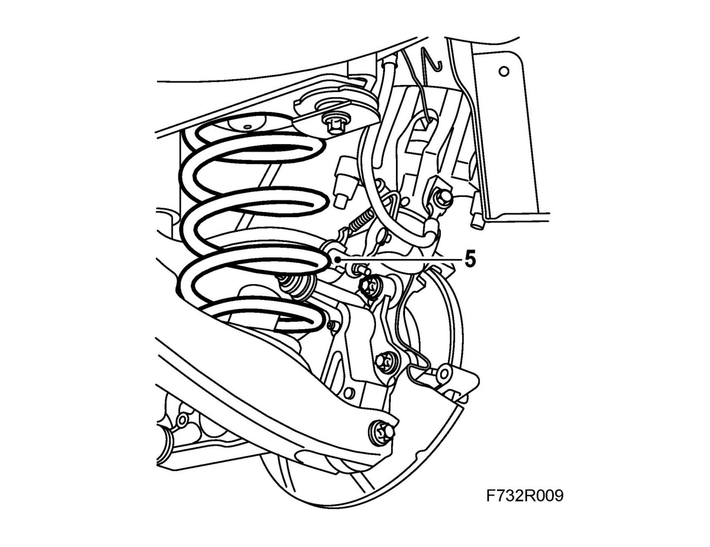
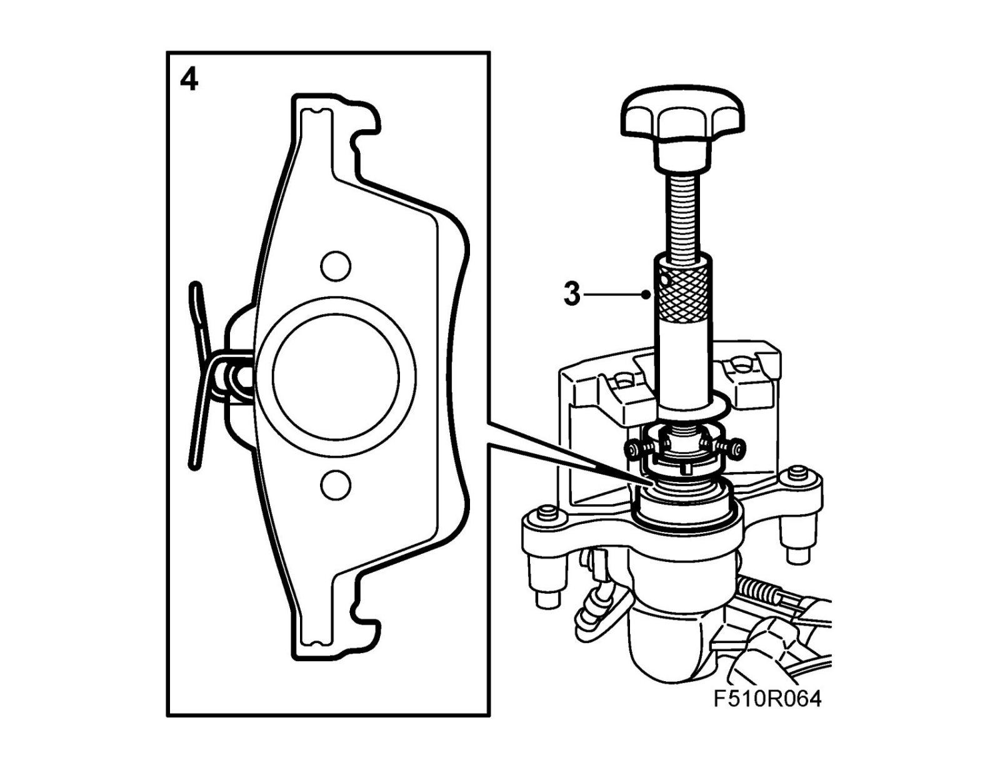
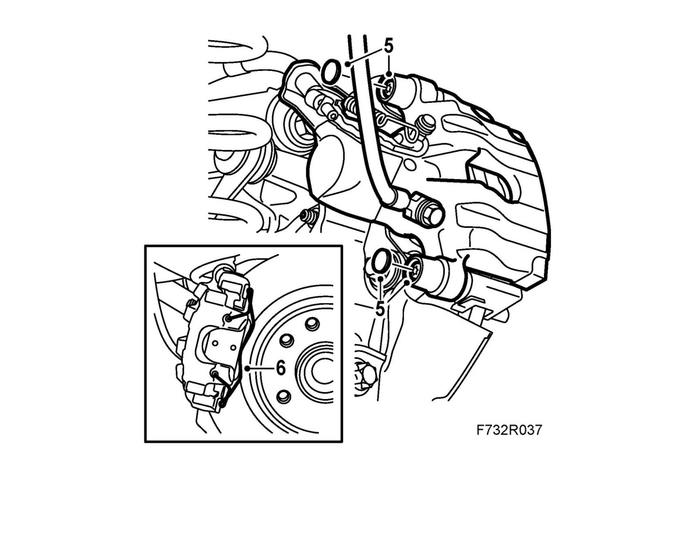

Suspension Spring ( Coil / Leaf ): Service and Repair
SpringsTo remove
1. Raise the car.
2. Remove the wheel.
3. Remove the spring from the brake caliper.

4. Remove the protective covers.
Remove and move aside the hydraulic body.
Remove the outer brake pad.
5. Compress the spring with 88 18 791 Spring compressor and the small jaws and lift out the spring. Remove the spring from the tool.

To fit
1. Compress the spring with 88 18 791 Spring compressor and place the spring support in the spring.
2. Lift the spring into position. Remove the spring compressor.
3. Remove the inner brake pad and screw in the brake piston using 89 96 969 Resetting tool and 89 96 977 Adapter.

4. Fit the brake pads.
5. Fit the hydraulic body.
Tightening torque 28 Nm (21 lbf ft)
Fit the protective covers.

6. Fit the spring to the brake caliper.
7. Fit the wheel.
8. Lower the car to the floor.
9. Depress the brake pedal several times to press out the self adjustment of the brake pistons and the parking brake.